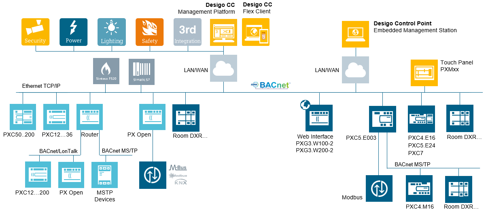
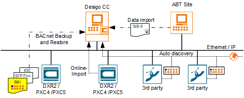
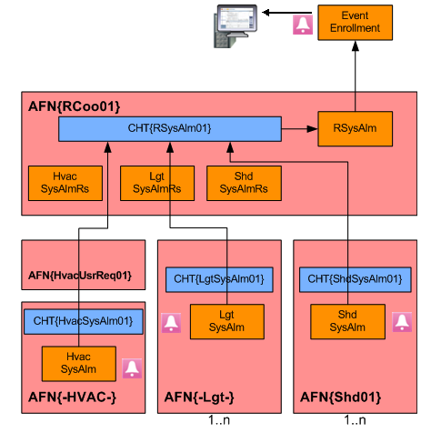
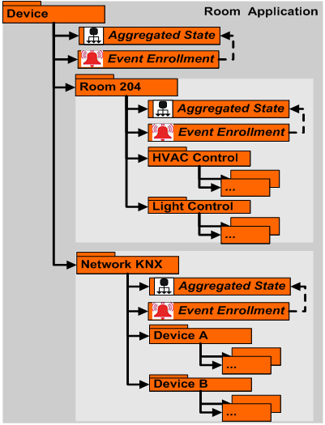
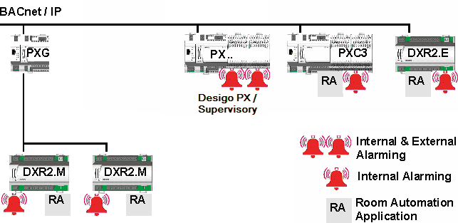

Introduction
System Topology
The system offers a wide range of topologies, so that it can be adapted to an unlimited number of individual requirements. For this reason, this document only provides a description of a general system topology.

Terms Used
Term | Description |
Application structure | The Desigo Automation application structure has changed for Desigo Version 6 versus Desigo Version 5.1. The management platform supports both versions, but the graphical display of the rooms is different. |
Application modeling | An object with the associated subobjects to display a room in Desigo Automation Version 6. Use only on the management platform. It can be modified for a project. |
Compatibility list
Compatibility overview | |||||
Topic | Detail description | Version | Support | ||
BACnet protocol | BACnet protocol revision | <1.13 | Yes | ||
1.15 | Yes | ||||
>1.15 | No | ||||
Desigo PXC3 | Automation station | Firmware 1.15 | No | ||
Firmware 1.16 / 1.20 / 2.10 | Yes | ||||
Desigo PXC4 | Automation station |
| Yes | ||
Desigo PXC5 | Automation station |
| Yes | ||
Desigo PXC7 | Automation station |
| Yes | ||
Desigo DXR1 | Automation station (exported as s1x export file) | SVS300.6 | Yes | ||
Desigo DXR2 | Automation station (exported as s1x export file) | Firmware 1.20 /1.21 | Yes | ||
RDS110.R | Smart Thermostat (exported as s1x export file) |
| Yes | ||
EV-100.E | Intelligent Valve (exported as s1x export file) | Firmware 1.13 | Yes | ||
Desigo V5.1 | Exported as s1x export file | ABT Tool V1.1 (PXC3 FW 1.16) | Yes | ||
Desigo V6 | Exported as s1x export file version 5.1 | ABT Tool V1.2 (PXC3 FW 1.16) | Yes | ||
As updated s1x export file, version 6, exported using the application architecture for version 5.1 | ABT Tool V1.2 (PXC3 FW 1.20) | Yes | |||
As s1x file, version 6, exported using the new application architechture for version 6 | ABT Tool V1.2 (PXC3 FW 1.20) | Yes | |||
Desigo V6.1 | Exported as s1x export file | ABT Tool 3.0 (PXC3 FW 1.21) | Yes | ||
Desigo V6.2 | Exported as s1x export file | ABT Tool 3.2 (PXC3 FW 1.21) | Yes | ||
Desigo V6.3 | Exported as s1x export file | ABT Tool 4.0 (PXC3 FW 1.21) | Yes | ||
| ABT Tool 4.1 up to 5.1 are supported as well, in the same manner. |
|
| ||
Desigo V6.3 | Exported as s1x export file | ABT Tool 5.2 (PXC3 FW 1.21) |
| ||
Exception list of functions in Desigo devices
The list describes the functions from Desigo devices that are partially handled in a different manner from the point of view of Desigo CC.
Desigo automation stations | Detail description | Version | Support in Desigo CC |
| BACnet IP automation stations | >=2.37 | Yes |
BACnet IP Automation Station (LON over router PXG3.L= | <5.0 | No | |
Creating and delete dynamic BACnet object | >=5.0 | Yes | |
BACnet backup and restore | <4.0 | No | |
>=4.0 | Yes |
NOTE: This table applies to Desigo PX devices only (e.g. PXC100 and similar, but no newer device generation).
What | iValve | Smart Thermostat | DXR1 | DXR2 | PXC3 | PXC4 |
Create dynamic BACnet objects | No | No | No | No | No | Yes1 |
Support for BACnet backup & restore | No | No | No | Yes | Yes | Yes |
Edit scheduler | No | Yes | No | Yes | Yes | Yes |
Can server as time master on the network | No | No | No | No | No | Yes |
Discovery as Desigo device (without changes) | No | No | No | No | No | Yes |
Discovery as third-party BACnet device (no proprietary properties) | Yes | Yes | Yes | Yes | Yes | Yes |
Event enrollment alarms | No | No | No | Yes | Yes | Yes |
Intrinsic alarms | No | No | No | No | No | Yes |
Common alarm acknowledgment | No | No | No | Yes | Yes | Yes |
Support for room & segment | No | No | Yes | Yes | Yes | Yes |
Group master for central commands | No | No | No | Yes | Yes | Yes |
Group member for central commands | No | No | Yes | Yes | Yes | Yes |
Import from access level 0 | No | No | No | No | No | No |
Import from access level 1…5 | No | No | No | No | No | Yes |
Import from access level 6+7 | Yes | Yes | Yes | Yes | Yes | Yes |
1 Creating dynamic BACnet objects on PXC4/5/7 devices requires minimum firmware 2.20.172.
Multiple Languages for Data Import
Automated support for multiple languages is based on the project settings on the System Management Console. The associated languages are imported during import if a project is set up as multilingual. The requirement is that engineering was conducted using SDU standard texts (The System Definition Utility is the tool for creating meta data).
The following example illustrates a standard solution in various languages in the System Browser.
Project with four Languages | |||
English | German | French | Russian |
|
|
|
|


NOTES:
− During data import, the period is converted to an underscore; a period is not permitted in the description text.
− Project-specific data point texts, for example: Northeast wing cannot be automatically translated. These texts must be translated after the fact using the object configurator.
− Always create a project with an additional language. This permits you to use it as a multilingual project at a later date.
Supported BACnet Object Types
Object Types
Exported BACnet object types associated with a Desigo automation station:
- Automation Station (Devices): Controls system components and equipment controllers. An automation station samples and processes field data, initiates control actions, communicates with its operators, and generates reports, displays, and warnings.
- Commands (CMD): An object that writes to a group of object properties through action code(s) inside the Present_Value property. The Command object starts a sequence of actions in the BACnet devices during this write action.
- Event Enrollment (EE): The management of events for a BACnet system. Events are changes in the value of any property concerning any object that meets specific criteria. Compiles individual event enrollment alarms as a system alarm.
- I/O Objects:
- Inputs: The input block acquires a value from an external data source and converts it to a process value
- Outputs: The output block calculates the present switching value from several, prioritized setpoints (priority array) and transmits the switching value to an external data.
- Loop (LOOP): The Loop block is a universal PID controller (P, PI, PD, or PID), with external tracking. It supplies a modulating manipulated variable.
- Schedules: Acts as a bridge between scheduled times and dates, and the writing of certain values to specific properties and objects concerning the schedule.
- Trend Logs (TLOG): Monitor a property for a specific object. When certain conditions are reached, a log is produced with the property value and a date/time stamp which is placed into a buffer for future retrieval.
- Object structure view: Is needed to display underlying objects in a defined hierarchy.
Dynamic objects
Dynamic objects are not supported on PXC3 and DXR automation stations. PXC4/5/7 devices support dynamic objects, provided that minimum firmware 2.20.172 is installed.
Hierarchies/Views
BACnet objects are depicted hierarchically per the various views:
- Logical View: Displays BACnet data points, aggregators and subpoints that are in the database. The visual layout of these objects is based on the point naming convention (technical designation) of the object.
- User View: Displays the objects as per the user designation of the company. Only objects with a user designation (UD) are displayed. This view is optional and can be populated at import time.
- Application View: Displays various applications, for example, central functions, scheduler, reports, documents, trends, etc.
- Management View: Displays the system view for networks, management functions (servers, drivers), system settings (libraries, security, users) and all data points on one device.
- User View: Displays the customized views of objects or functions using views. Multiple views can be created.
Various views of objects and functions | ||
Logical | Application | Users |
|
| Based on the customer's user name structure. |
Management | User defined |
|
| Structure depend of the project definition. |
|


Import Data
The Desigo Automation program data can be imported by an offline or online data import to the project.
NOTE: Not all Desigo automation stations support online data import (see details below).

NOTE:
The management platform periodically checks the consistency of the system information against information from room automation station. In the event of an inconsistency, you must conduct an offline data import.
Offline data import
You use a file from ABT Site for the import function. This is the typical procedure for new contracts where all preparatory work – creating graphics, setting up networks, etc. – is done prior to going to the actual site (offline commissioning).
Offline data import works for all known Desigo automation stations (PXC4/5/7, PXC3, DXR2 and DXR1).
Online Data Import
An Online data import is supported by most, but not all Desigo automation stations. The appropriate field network must be selected. In the Network devices tab, all the discovered Desigo automation stations can be imported online.
Online import is supported for PXC4/5/7 devices, provided that they use minimum firmware 2.20.172.
The following Desigo automation stations do NOT support online import: PXC3, DXR2 and DXR1 (listing nonexhaustive).
Auto Discovery
The Desigo automation station does not support the Auto-Discovery function.
BACnet Backup and Restore
BACnet Backup and Restore uploads saved program data (application program) for a BACnet device to the management platform and then restores it as needed to the same or a new BACnet device.
Alarm Response for Different Versions
Version 5.1
One common alarm per room is evaluated to keep the number of system alarms to a minimum. Room coordination records the state information (Normal/Alarm) of each zone and all electrical and mechanical installations and determines from them the room-wide alarm state as a common alarm. The alarm is evaluated on the Desigo PX automation station. The actual automation station has no alarmable objects.
 | ||
HVAC application | Light | Shading |
Version 6
Event Enrollment (EE) as a component of the Desigo automation station as of Version 6. The application is designed for the following objects to send an alarm to the management platform in the event of a fault:
- Automation Station
- I/O bus
- KNX PL-Link bus
- Room
- Segment

Alarm monitoring occurs in various ways depending on the hardware in use. Alarming and alarm acknowledgement are, however, the same for the user.

Template Project Information
User Groups in the Template Project
The following user groups are predefined in the system and cannot be changed:
- DefaultAdmins
- DefaultUsers
- FallbackPolicy
- OPCGroup
The template project contains the following preconfigured user groups and rights. They can be changed, deleted, or extended by new user groups:
- Administrators
- Engineering
- Maintenance Grp
- Operators Grp 1
- Operators Grp 2
- Operators Grp 3
Scope Rights
Scope rights define what a user can display or command in his or her project. The template project sets discipline, subdiscipline, object type, and object subtype to All. The write rights (W) and read rights (R) are configured differently and described in the following tables.
Scope rights of user groups: DefaultAdmins, Administrators, Engineering. | |||||||||
Property Groups | Command Groups | Create | Drop | ||||||
Sta. | Con. | Dia. | Own | Sta. | Eve. | Adv. | Own | ||
W | W | W | W | Yes | Yes | Yes | Yes | Yes | Yes |
Scope rights of user groups: DefaultUsers, FallbackPolicy | |||||||||
Property Groups | Command Groups | Create | Drop | ||||||
Sta. | Con. | Dia. | Own | Sta. | Eve. | Adv. | Own | ||
R | R | R | - | No | No | No | No | No | No |
Scope rights of user group: Maintenance Grp | |||||||||
Property Groups | Command Groups | Create | Drop | ||||||
Sta. | Con. | Dia. | Own | Sta. | Eve. | Adv. | Own | ||
W | R | R | - | Yes | Yes | No | No | No | No |
Scope rights of user group: OPCGroup | |||||||||
Property Groups | Command Groups | Create | Drop | ||||||
Sta. | Con. | Dia. | Own | Sta. | Eve. | Adv. | Own | ||
- | - | - | - | - | - | - | - | - | - |
Scope rights of user group: Operators Grp 1 | |||||||||
Property Groups | Command Groups | Create | Drop | ||||||
Sta. | Con. | Dia. | Own | Sta. | Eve. | Adv. | Own | ||
W | R | R | - | Yes | Yes | No | No | No | No |
Scope rights of user group: Operators Grp 2 | |||||||||
Property Groups | Command Groups | Create | Drop | ||||||
Sta. | Con. | Dia. | Own | Sta. | Eve. | Adv. | Own | ||
W | R | R | - | No | No | No | No | No | No |
Scope rights of user group: Operators Grp 3 (Lite user) | |||||||||
Property Groups | Command Groups | Create | Drop | ||||||
Sta. | Con. | Dia. | Own | Sta. | Eve. | Adv. | Own | ||
W | R | R | - | No | No | No | No | No | No |
Application Rights
Application rights specify which application a user can display and configure.
| Application rights of default user groups. Key: X = Display and configure O = Display only Empty = No user rights | ||||||
Application | Administrator | Engineering | Maintenance | Operator Gr1 | Operator Gr2 | Operator Gr3 | |
Notification > Recipient | X | X | X | O | O |
| |
Assisted Event Treatment | X | X | X | X | X |
| |
BACnet Configurator | X | X |
|
|
|
| |
device | X | X | O | O | O |
| |
Document Configurator | X | X | X | X | X |
| |
Document Viewer | X | X | X |
|
| O | |
Driver | X | X |
|
|
|
| |
Graphic editor | X | X | X |
|
|
| |
Graphic Library Editor | X | X |
|
|
|
| |
Graphics Viewer | X | X | X | X | X | O | |
Symbols | X | X |
|
|
|
| |
Import rules | X | X |
|
|
|
| |
Data import | X | X |
|
|
|
| |
Journaling printers | X | X | X | O | O |
| |
Library | X | X |
|
|
|
| |
License | X | X |
|
|
|
| |
Log Viewer | X | X | X | O | O | O | |
Macro | X | X | X | O | O |
| |
Network | X | X | O | O | O |
| |
Object Configurator | X | X | O |
|
|
| |
Operating Procedure | X | X | O | O | O |
| |
Reactions | X | X | O | O | O |
| |
Notification | X | X | O | O | O |
| |
Reports | X | X | X | O | O | O | |
Schedules | X | X | X | X | X |
| |
Scopes | X | X |
|
|
|
| |
Safety & Security | X | X |
|
|
|
| |
Sessions | X | X |
|
|
|
| |
System Management | X | X |
|
|
|
| |
Text Groups | X | X |
|
|
|
| |
Trends | X | X | X | X | X | O | |
Manual Trend Correction | X | X |
|
|
|
| |
Users | X | X |
|
|
|
| |
Video Display | X | X |
|
|
|
| |
Video wall | X | X |
|
|
|
| |
Video Configurator | X | X |
|
|
|
| |
Video PTZ | X | X |
|
|
|
| |
Views | X | X |
|
|
|
| |
View Configurator | X | X |
|
|
|
| |
User Profile in the Template Project
The following users are predefined in the system and cannot be changed:
Preconfigured System Users | |||
Users | Password | User Group | Client Profile |
DefaultAdmin |
| DefaultAdmins | Default |
GmsDefaultUser |
| DefaultUsers | Default |
root |
|
| Default |
User Profile Response between Server and Client
The user profile specifies the number of alarm buttons in the Event bar. The corresponding discipline profiles as well as the default profile can be selected from the template project. The user profile can be defined in the server or at the corresponding user, whereby the server has higher priority (see table below).
User profile settings. | ||
Servers | Users | Used actively |
empty | Default | Default |
empty | BA_EN | Default |
Default | Default | Default |
Default | BA_EN | Default |
BA_EN | BA_EN | BA_EN |
BA_EN | Default | BA_EN |
List Sequence on the Lite User Interface
The list sequence determines the sequence of the symbols on the lite user interface.
List sequence | ||
Number | Application | Comment |
0 |
| Alphabetical sequence within the same value |
0001 | Graphic |
|
0100 | Subsystem schedules | Must be configured |
0200 | Subsystem calendar | Must be configured |
0400 | Subsystem trends | Must be configured |
0700 | Trend definition | Disabled by default |
0800 | Log Viewer | Disabled by default |
0900 | Report definition | Disabled by default |
1000 | Documents | Disabled by default |
1200 | RENO recipient | Disabled by default |
1300 | RENO procedures | Disabled by default |